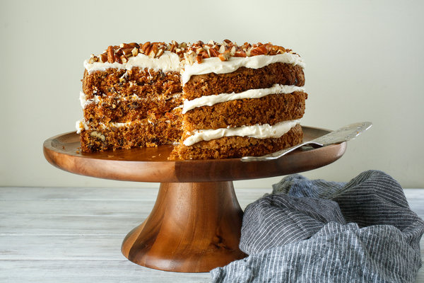

Carrot Cake
Description
Here's an old-fashioned carrot cake that's got more carrots than spice. Pecans can be substituted for walnuts.

Cooking Information
- Prep: 30 mins
- Cook: 55 mins
- Additonal: 35 mins
- Total: 120 mins
- Servings: 15
- Yield: 15 to 18 servings
Nutrition Facts
Per Serving: 616 calories; protein 6.2g; carbohydrates 83.5g; fat 30.2g; cholesterol 70.4mg; sodium 540.4mg.
Ingredients
- 2 cups white sugar
- 3/4 cup vegetable oil
- 3 eggs
- 1 teaspoon vanilla extract
- 3/4cup buttermilk
- 2 cups grated carrots
- 1 cup flaked coconut
- 1 (15 ounce) can crushed pineapple, drained
- 2 cups all-purpose flour
- 2 teaspoons baking soda
- 2 teaspoons ground cinnamon
- 1 1/2 teaspoon salt
- 1 cup chopped walnuts
- 1/2 cup butter
- 1 (8 ounce) package cream cheese
- 1 teaspoon vanilla extract
- 4 cups confectioners' sugar
Directions
- Step 1
- Preheat oven to 350 degrees F (175 degrees C). Grease a 9x13 inch baking pan. Set aside.
- Step 2
- In a large bowl, mix together sugar, oil, eggs, vanilla, and buttermilk. Stir in carrots, coconut, vanilla, and pineapple. In a separate bowl, combine flour, baking soda, cinnamon, and salt; gently stir into carrot mixture. Stir in chopped nuts. Spread batter into prepared pan.
- Step 3
- Bake for 55 minutes or until toothpick inserted into cake comes out clean. Remove from oven, and set aside to cool.
- Step 4
- In a medium mixing bowl, combine butter or margarine, cream cheese, vanilla, and confectioners sugar. Blend until creamy. Frost cake while still in the pan.